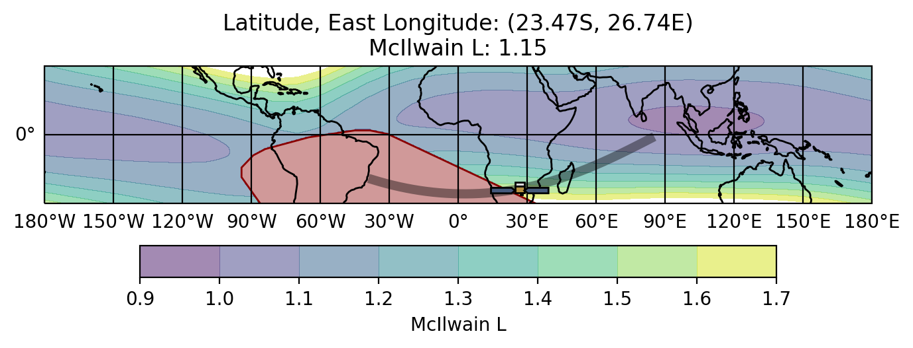

Swift BAT Position/Attitude History Data (gdt.missions.swift.bat.poshist)¶
Probably the most critical auxiliary file bat produces is the Spacecraft Attitude/Orbit (SAO) history file. The SAO contains the spacecraft location in orbit and pointing information, sampled on a 1 second timescale. You may want to know if a source is visible at a particular time (i.e. not behind the Earth). You may want to know if there are specific contributions to the background during a time interval, such as sun visibility or high geomagnetic latitude in orbit. You may want to rotate something from the equatorial frame to the swift inertial frame, or vice versa. Or you may want to make a pretty gif of the detector pointings over time.
To read a SAO file, we open it with the |BatSao| class:
>>> from gdt.core import data_path
>>> from gdt.missions.swift.bat.poshist import BatSao
>>> filepath = data_path.joinpath('swift-bat/glg_poshist_all_170101_v01.fit')
>>> sao = BatSao.open(filepath)
>>> sao
<BatSao(filename="sw00974827000sao.fits") at 0x7fd63d9ebd90>
The sao object contains the spacecraft frame, which is the spacecraft position and orientation as a function of time, and the spacecraft states, which are the series of state flags as a function of time.
To see what state flags are available, we can retrieve the spacecraft states in the following way:
>>> states = sao.get_spacecraft_states()
>>> states
TimeSeries length=2162
time sun saa
Time bool bool
---------------- ---- -----
612353536.6006 False False
612353537.6006 False False
612353538.6006 False False
612353539.6006 False False
612353540.6006 False False
612353541.6006 False False
612353542.6006 False False
... ... ...
612355691.6006 True False
612355692.6006 True False
612355693.6006 True False
612355694.6006 True False
612355695.6006 True False
612355696.6006 True False
612355697.6006 True False
The state flags are stored in an Astropy TimeSeries object, and for each sampled time, there is a flag denoting if the sun is visible, if the spacecraft is in SAA, and if the data are in a good time interval (which in this case is just the opposite of the SAA flag).
We can, for example create a Good Time Intervals Gti object from the time
and good columns:
>>> from gdt.core.data_primitives import Gti
>>> gti = Gti.from_boolean_mask(states['time'].value, states['good'].value)
>>> gti
<Gti: 10 intervals; range (504921545.740106, 505008064.340076)>
Regarding the spacecraft frame, we can retrieve it as a SpacecraftFrame
object:
>>> frame = sao.get_spacecraft_frame()
<SpacecraftFrame: 2162 frames;
obstime=[612353536.6006, ...]
obsgeoloc=[(-6165602., -2728582.2, 1604040.5) m, ...]
obsgeovel=[(3400.097, -6478.7993, 2006.0916) m / s, ...]
quaternion=[(x, y, z, w) [-0.35197902, -0.34436679, -0.75078022, 0.44028553], ...]>
You will notice that this frame has a location in Earth Inertial Coordinates
(obsgeoloc), the velocity of the spacecraft with reference to the Earth
Inertial Coordinate frame (obsgeovel), and the spacecraft orientation
quaternion, each for a given time stamp (obstime).
Let’s say we are interested in data around a specific time, for example MET=612355691.6006. We can generate an interpolated frame at the requested time, as long as it exists within the boundaries of the file.
>>> from gdt.missions.swift.time import *
>>> time = Time(612355691.6006, format='swift')
>>> one_frame = frame.at(time)
>>> one_frame
<SpacecraftFrame: 1 frames;
obstime=[612353568.6006]
obsgeoloc=[(-6053036.5, -2934188.25, 1667236.) m]
obsgeovel=[(3634.45629883, -6370.18457031, 1943.17504883) m / s]
quaternion=[(x, y, z, w) [-0.35197902, -0.34436679, -0.75078022, 0.44028553]]>
We can retrieve where swift was in orbit at that time:
>>> one_frame.earth_location.lat, one_frame.earth_location.lon
(<Latitude 13.90252342 deg>, <Longitude 166.51336479 deg>)
>>>one_frame.earth_location.height
<Quantity 553340.05 m>)
We might be interested to know where the Earth is (and its apparent radius) relative to swift:
>>> one_frame.geocenter.ra, one_frame.geocenter.dec
(<Longitude 25.86162543 deg>, <Latitude -13.92040074 deg>)
>>> one_frame.earth_angular_radius
<Quantity 66.95088 deg>
We could also be interested in a particular known source, and it would be helpful to know if it is even visible to swift at the time of interest:
>>> from astropy.coordinates import SkyCoord
>>> coord = SkyCoord(324.3, -20.8, frame='icrs', unit='deg')
>>> one_frame.location_visible(coord)
False
Well, that’s good to know.
Sometimes it’s useful to transform a source location of interest in equatorial coordinates to the swift inertial frame. You can do that by the following:
>>> coord_sc_frame = coord.transform_to(one_frame)
>>> coord_sc_frame.az, coord_sc_frame.el
(<Longitude [112.81508548] deg>, <Latitude [-27.58260743] deg>)
Note that the frame transformation is in azimuth and elevation. It’s important to note that the Swift inertial frame is defined by azimuth (0-360 deg) and elevation (-90-90 deg) or zenith (0-180 deg).
You can also go from Swift (azimuth, elevation) coordinates to equatorial coordinates:
>>> sc_coord = SkyCoord(0.0, 90.0, frame=one_frame, unit='deg')
>>> sc_coord.icrs
<SkyCoord (ICRS): (ra, dec) in deg
[(74.76263619, 31.00043466)]>
Note that any and all of these operations can be performed on an array of
frames, even on the entire series of frames contained within the SAO file.
For more details on working with the SpacecraftFrame,
see Spacecraft Attitude, Position, and Coordinates.
Now all of this great, but we can also make a sky plot at a given time. We can plot in either the Equatorial frame:
>>> import matplotlib.pyplot as plt
>>> from gdt.core.plot.sky import EquatorialPlot
>>> eqplot = EquatorialPlot()
>>> eqplot.add_frame(one_frame)
>>> plt.show()
Or the Galactic Frame:
>>> from gdt.core.plot.sky import GalacticPlot
>>> galplot = GalacticPlot()
>>> galplot.add_frame(one_frame)
>>> plt.show()
Or the Spacecraft Frame:
>>> from gdt.core.plot.sky import SpacecraftPlot
>>> scplot = SpacecraftPlot()
>>> scplot.add_frame(one_frame)
>>> plt.show()
See Plotting Sky Maps, Localizations, and Wide-field Effective Area for more details on these plots.
Finally, we can plot a segment of the swift orbit and the location of swift at our desired time:
>>> from gdt.missions.swift.plot import SwiftEarthPlot >>> from gdt.missions.swift.bat.saa import BatSaa >>> earthplot = swiftEarthPlot(saa=batSaa()) >>> # orbit segment 1000 s prior to our time of interest and 1000 s after >>> earthplot.add_spacecraft_frame(frame, tstart=Time(time.swift-1000, format='swift'), >>> tstop=2000, trigtime=time) >>> earthplot.standard_title() >>> plt.show()
Reference/API¶
gdt.missions.swift.bat.poshist Module¶
Classes¶
|
The Bat Detector name and orientation definitions. |
|
|
|
Class for reading a GBM Position history file. |
|
A context manager for FITS files. |
|
A class for containing a quaternion and performing quaternion operations. |
|
|
|
Spacecraft frame. |
|
Mixin that prototypes the retrieval and saving of spacecraft frame information. |
|
Mixin that prototypes the retrieval and saving of spacecraft state information. |
|
Represent and manipulate times and dates for astronomy. |
|
A class to represent time series data in tabular form. |